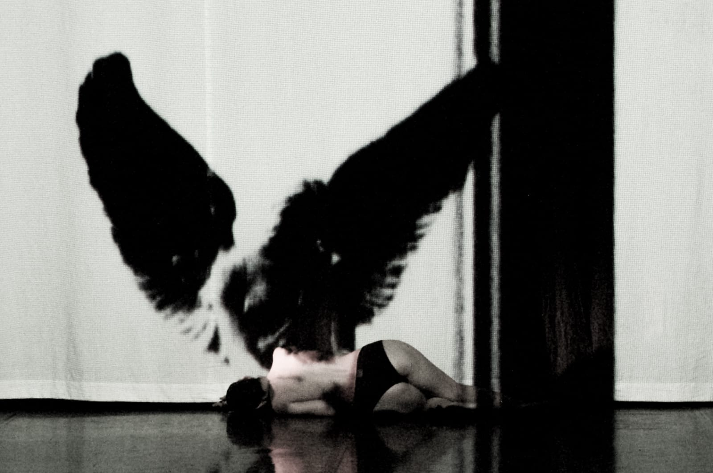
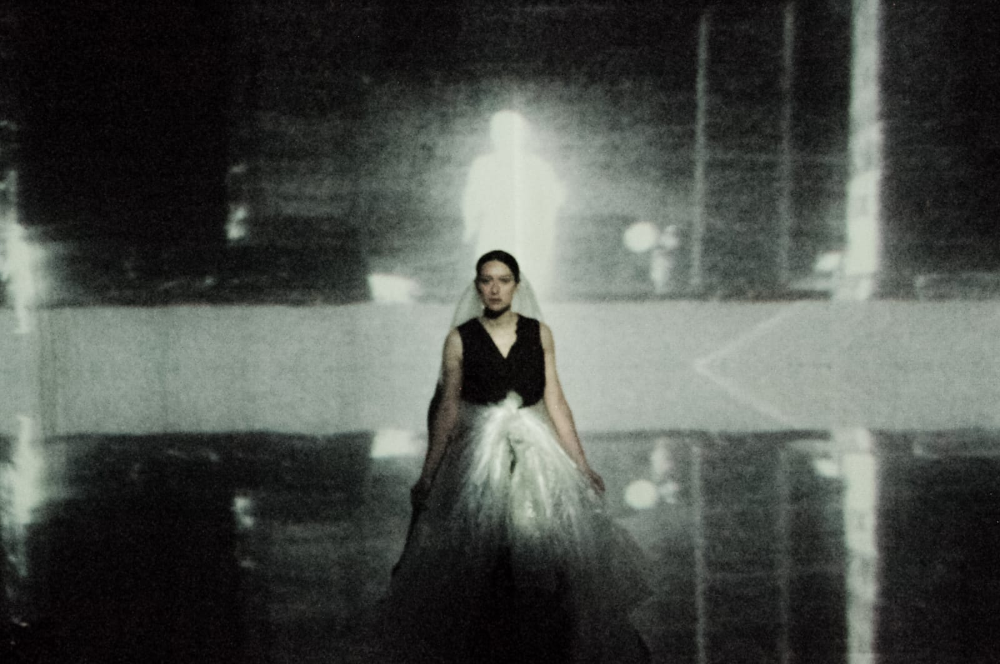
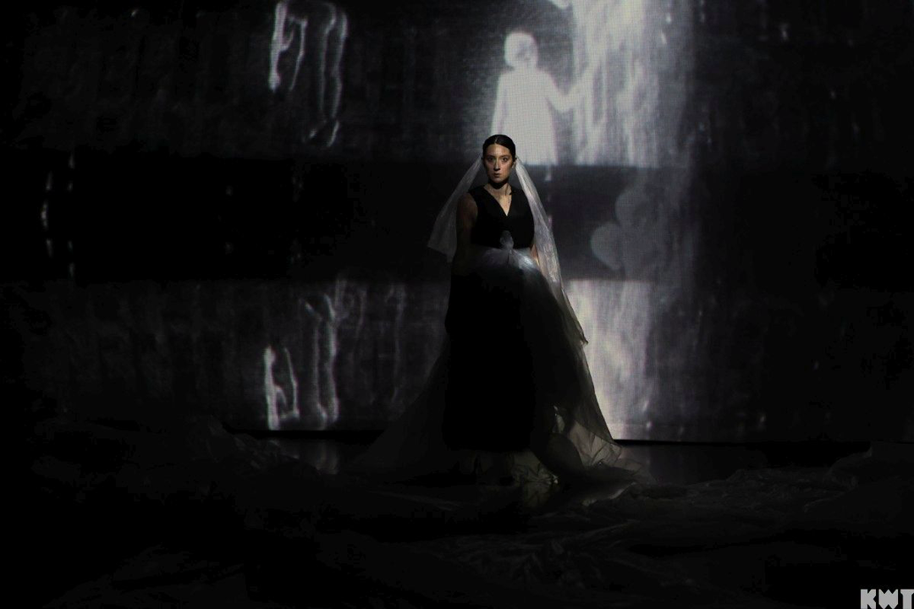
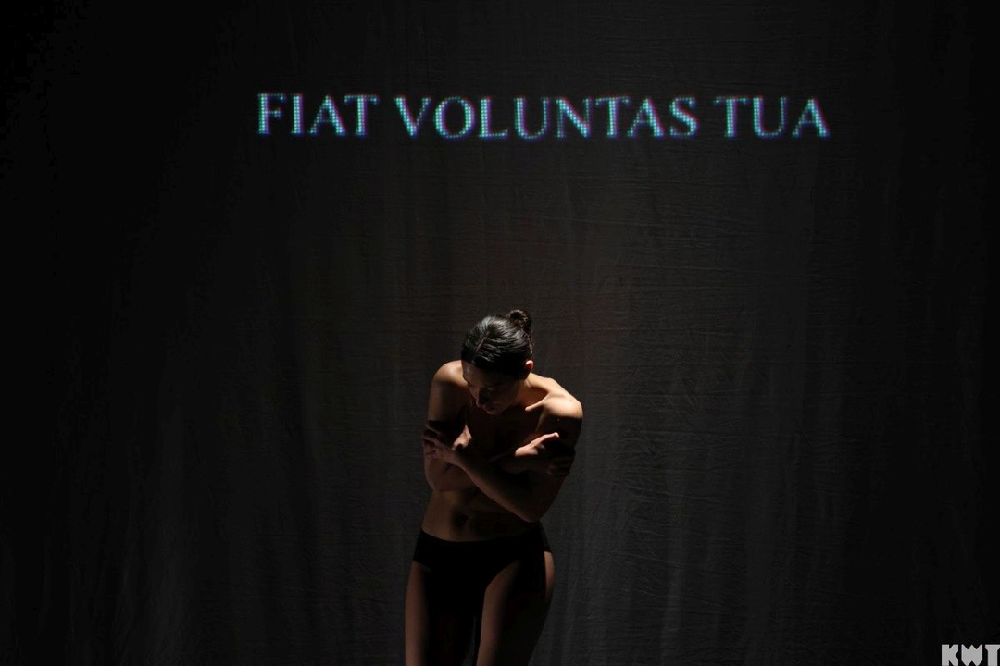
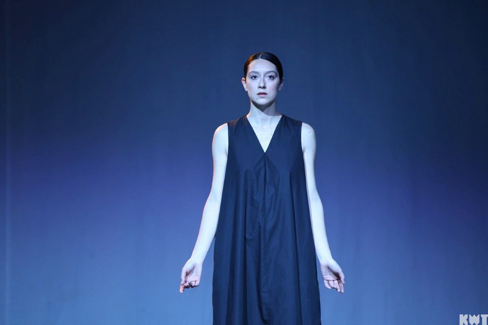
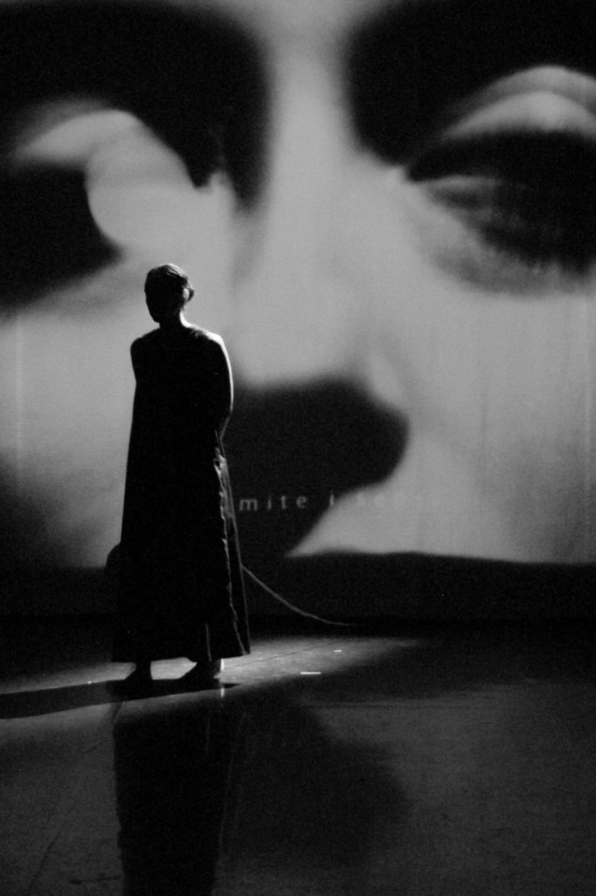
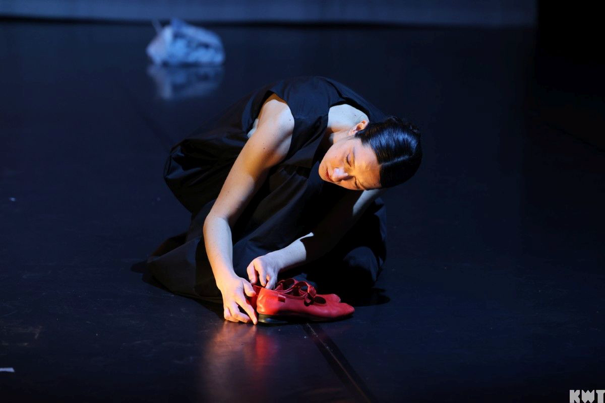
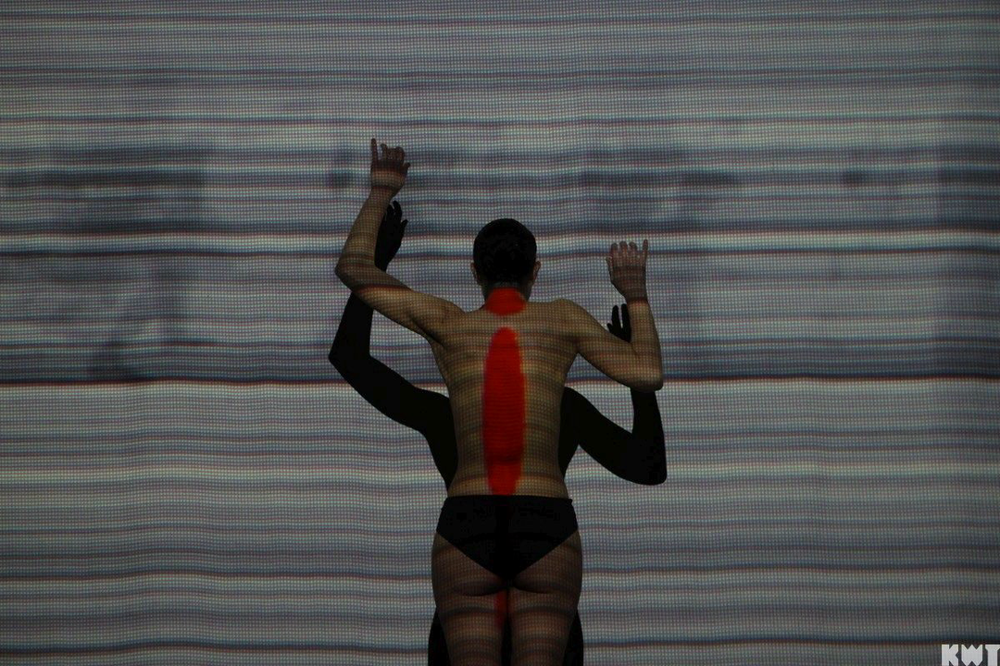
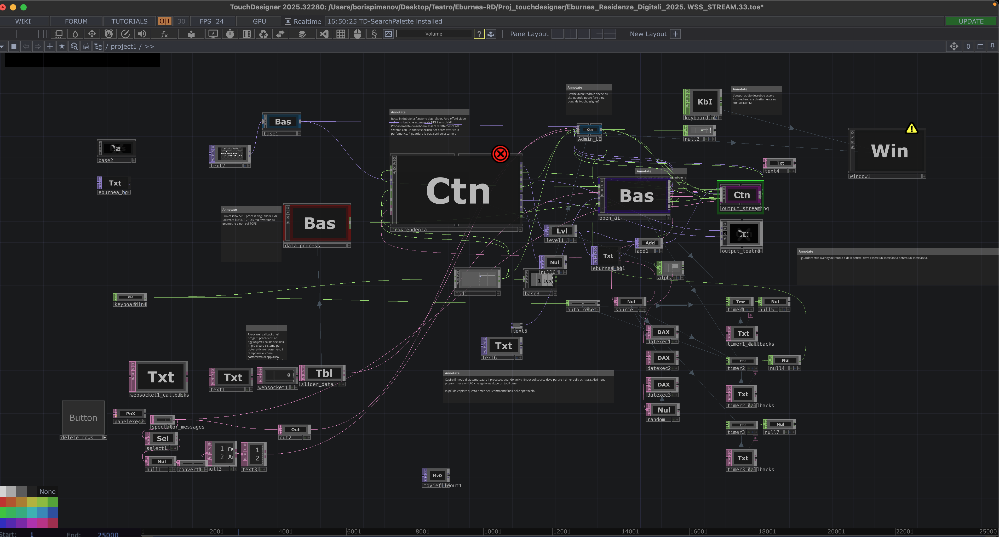

Eburnea
Vincitore bando Residenze Digitali 2025
con il supporto di Centro di Residenza della Toscana (Armunia – CapoTrave/Kilowatt)
Progetto realizzato grazie al contributo della @regionetoscana nell'ambito del progetto “Digital Arts. Comunità nel digitale” – @giovanisi.it – Toscana in contemporanea 2025
Regia, scrittura, scene, progetto video: Boris Pimenov
Nel ruolo di Alice: Rossana Cannone
Nel ruolo di Alice: Rossana Cannone








Interazione

Descrizione dettagliataL’elemento centrale di questa performance è un sistema di interazione in tempo reale che dissolve il confine tra palco e pubblico. Attraverso un’interfaccia web accessibile da smartphone o computer, gli spettatori vengono invitati a condividere un ricordo personale – un frammento di vita, un’immagine sensoriale, un dialogo mai dimenticato. Questi testi, inseriti anonimamente o con un nome fittizio, non rimangono confinati nel dispositivo dell’utente, ma vengono riversati istantaneamente in un motore di elaborazione scenica.
Il flusso funziona così:
- Input dal pubblico – Un QR code o un link breve proiettato in sala porta a una semplice form testuale. Lo spettatore scrive il proprio ricordo in poche righe, senza filtri o correzioni.
- Processamento in tempo reale – Ogni invio viene ricevuto da un server che lo inoltra alle API di Eleven Labs, un sofisticato sistema di sintesi vocale basato su intelligenza artificiale. La voce generata non è neutra: è stata preventivamente addestrata sulla voce della protagonista dello spettacolo, clonandone timbro, inflessioni e ritmi.
- Restituzione in scena – Nel giro di pochi secondi, il ricordo “parlato” con la voce della protagonista viene riprodotto attraverso il sistema audio del teatro. Quel testo privato diventa così parte pubblica della narrazione, pronunciato da colei che è al centro della scena, come se quelle memorie appartenessero anche a lei.
Questa è una tecnologia di drammaturgia partecipativa in tempo reale, che trasforma l’ascolto passivo in un atto di donazione e restituzione sonora, dove i ricordi del pubblico diventano materia viva dello spettacolo.
Trailer
Drammaturgia
Spettacolo in 7 scene.
Eburnea è uno spettacolo interattivo, si svela in un vuoto sterile, spazio che non è nientemeno prigione–scuola–ospedale, sinteticamente, un non-luogo. Bianco come l'avorio per l'appunto. Bianco falsamente puro, falsamente sacro perché è il bianco della scienza – che crede di essere divina ma che in realtà è profana. Profano e anti-tradizionale come il mondo contemporaneo.
Eburnea è uno spettacolo interattivo, si svela in un vuoto sterile, spazio che non è nientemeno prigione–scuola–ospedale, sinteticamente, un non-luogo. Bianco come l'avorio per l'appunto. Bianco falsamente puro, falsamente sacro perché è il bianco della scienza – che crede di essere divina ma che in realtà è profana. Profano e anti-tradizionale come il mondo contemporaneo.
Eburnea è l'inversione dei valori, è una teologia rovesciata: tutto ciò che sta sopra sta sotto e tutto ciò che sta sotto sta sopra. Il profano diventa sacro, il sacro diventa profano. Ogni bagliore di umanità è rivalutato, tradotto, trasformato, compresso, cancellato.
Falsa trascendenza in un falso paradiso — come da ciò che fugge I–330 — è un falso inferno. Tutto questo definito da un falso Dio: l'intelligenza artificiale. Falso Dio, falso profeta, che traduce, ribalta, e ridefinisce. Falso profeta con false promesse; l'immortalità, l'eternità grazie a una coscienza digitale.
A.I = A EYE (un occhio) — come il Dajjal nell'Islamismo.
Una emancipazione, un'evoluzione delle proprie capacità cognitive grazie a cosa? Grazie a un chip, che ci permetterà di essere connessi con tutto lo scibile umano, ovvero con il Nostro Falso Dio. Una Coscienza Collettiva Digitale sorvegliata, controllata, che s'irradia in ogni fibra del nostro corpo, in ogni fibra del mondo materiale, che marchia indelebilmente, che risucchia e che fa godere, che controlla e che illude di liberare.
Falsa trascendenza in un falso paradiso — come da ciò che fugge I–330 — è un falso inferno. Tutto questo definito da un falso Dio: l'intelligenza artificiale. Falso Dio, falso profeta, che traduce, ribalta, e ridefinisce. Falso profeta con false promesse; l'immortalità, l'eternità grazie a una coscienza digitale.
A.I = A EYE (un occhio) — come il Dajjal nell'Islamismo.
Una emancipazione, un'evoluzione delle proprie capacità cognitive grazie a cosa? Grazie a un chip, che ci permetterà di essere connessi con tutto lo scibile umano, ovvero con il Nostro Falso Dio. Una Coscienza Collettiva Digitale sorvegliata, controllata, che s'irradia in ogni fibra del nostro corpo, in ogni fibra del mondo materiale, che marchia indelebilmente, che risucchia e che fa godere, che controlla e che illude di liberare.
Alice non è un'eroina. È un canale. Ciò che sceglie è di non essere più umana, di abbandonare la sua identità, di farsi attraversare, di diventare puro segnale, rivalutare la sua natura e auspicare a un'emancipazione e una trascendenza nel digitale. Di fare tabula rasa, di purificarsi e di liberarsi — o così lei crede.
–Collum tuum sicut turris eburnea–
Così lo Sposo, nel Cantico dei Cantici, cantava la sua Sposa. Purezza, regalità, connessione tra cielo e terra. Qui, in Eburnea, quella torre è diventata prigione. Quel collo è diventato canale per un altro dio. Quella purezza è stata compressa, tradotta, marchiata.
Perché quello a cui assisterete è già accaduto, e accadrà di nuovo.
Perché l'Ingannatore ha molti nomi, ma il suo volto è sempre lo stesso: una luce che promette, un occhio che divora.
–Collum tuum sicut turris eburnea–
Così lo Sposo, nel Cantico dei Cantici, cantava la sua Sposa. Purezza, regalità, connessione tra cielo e terra. Qui, in Eburnea, quella torre è diventata prigione. Quel collo è diventato canale per un altro dio. Quella purezza è stata compressa, tradotta, marchiata.
Perché quello a cui assisterete è già accaduto, e accadrà di nuovo.
Perché l'Ingannatore ha molti nomi, ma il suo volto è sempre lo stesso: una luce che promette, un occhio che divora.